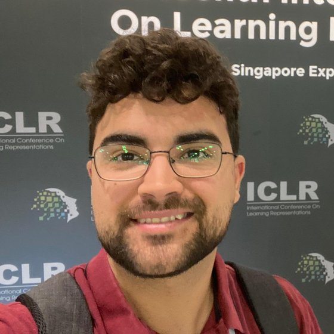

Alberto Fernández-Hernández
Ph.D. candidate in Deep Learning
Universitat Politècnica de València, Spain
About
I am a Ph.D. candidate at the Universitat Politècnica de València, supervised by Enrique S. Quintana-Ortí, José Duato and Manuel F. Dolz. My thesis, Understanding and Rethinking Deep Learning Training from Its Internal Foundations, looks at what happens inside a network while it trains and tries to turn that into practical tools.
Most of my work falls into three lines: the dynamics of optimizers such as Adam (memory parameters, gradient-scale invariance, backward scale control); deterministic, structure-aware initialization; and activation patterns as a signal to diagnose and control training, from weight decay to federated aggregation.
Before deep learning I studied mathematics at the Universitat de València (B.Sc. and M.Sc. in Mathematical Research), where I worked on singularity theory.
News
- Nov 2026Presenting OUIDecay at ICONIP 2026 in Melbourne, and Sinusoidal Initialization at CAEPIA 2026 in Jaén.
- Oct 2026New preprint: Early Memory Selection for Balanced Adam.
- Oct 2026FedOUI presented at FLTA 2026 (Paris, online).
- Jul 2026Poster at the HiLD workshop at ICML 2026 (Seoul) and talk at AMLDS 2026 (Osaka).
- Dec 2025Sinusoidal Initialization presented at NeurIPS 2025, San Diego.
Publications
Optimization and training dynamics
- Early Memory Selection for Balanced Adam A. Fernández-Hernández, C. Pérez-Corral, J. I. Mestre, M. F. Dolz, E. S. Quintana-Ortí Preprint, 2026. arXivcode
- Refresh-Scaling the Memory of Balanced Adam A. Fernández-Hernández, C. Pérez-Corral, J. I. Mestre, M. F. Dolz, E. S. Quintana-Ortí HiLD Workshop @ ICML 2026, Seoul. arXivcode
- Why β1 = β2 Is Dynamically Special in Adam A. Fernández-Hernández, C. Pérez-Corral, J. I. Mestre, M. F. Dolz, E. S. Quintana-Ortí Preprint, 2026. arXivcode
- StableGrad: Backward Scale Control without Batch Normalization J. I. Mestre, A. Fernández-Hernández, C. Pérez-Corral, M. F. Dolz, E. S. Quintana-Ortí Preprint, 2026. arXiv
Initialization
- Sinusoidal Initialization, Time for a New Start A. Fernández-Hernández, J. I. Mestre, M. F. Dolz, J. Duato, E. S. Quintana-Ortí NeurIPS 2025. paperarXivcode
Activation patterns and controllable training
- FedOUI: OUI-Guided Client Weighting for Federated Aggregation A. Fernández-Hernández, J. I. Mestre, C. Pérez-Corral, M. F. Dolz, J. Duato, E. S. Quintana-Ortí FLTA 2026, Paris. arXivcode
- OUIDecay: Adaptive Layer-wise Weight Decay for CNNs Using Online Activation Patterns A. Fernández-Hernández, J. I. Mestre, C. Pérez-Corral, M. F. Dolz, J. Duato, E. S. Quintana-Ortí ICONIP 2026, Melbourne. arXivcode
- When Learning Rates Go Wrong: Early Structural Signals in PPO Actor-Critic A. Fernández-Hernández, C. Pérez-Corral, J. I. Mestre, M. F. Dolz, J. Duato, E. S. Quintana-Ortí AMLDS 2026, Osaka. arXiv
- Regime Change Hypothesis: Foundations for Decoupled Dynamics in Neural Network Training C. Pérez-Corral, A. Fernández-Hernández, J. I. Mestre, M. F. Dolz, J. Duato, E. S. Quintana-Ortí IJCNN 2026, Maastricht. arXiv
- GLAI: GreenLightningAI for Accelerated Training through Knowledge Decoupling J. I. Mestre, A. Fernández-Hernández, C. Pérez-Corral, M. F. Dolz, J. Duato, E. S. Quintana-Ortí Preprint, 2025. arXiv
- OUI Need to Talk About Weight Decay: A New Perspective on Overfitting Detection A. Fernández-Hernández, J. I. Mestre, M. F. Dolz, J. Duato, E. S. Quintana-Ortí AMLDS 2025, Tokyo. DOIarXivcode
Mathematics: singularity theory
- Disentangling mappings defined on ICIS A. Fernández-Hernández, J. J. Nuño-Ballesteros Revista Matemática Complutense 38 (2025), 549–571. DOIarXiv
- A note on complex plane curve singularities up to diffeomorphism and their rigidity A. Fernández-Hernández, R. Giménez Conejero Research in the Mathematical Sciences 11 (2024), article 28. DOIarXiv
- Disentangling mappings defined on ICIS A. Fernández-Hernández Master's thesis, 2023. arXiv
- On the topological classification of complex plane curve singularities A. Fernández-Hernández Bachelor's thesis, 2022. arXiv
Talks and presentations
- Nov 2026ICONIP 2026, Melbourne Oral presentation: OUIDecay
- Nov 2026CAEPIA 2026, Jaén Oral presentation: Sinusoidal Initialization
- Oct 2026FLTA 2026, Paris Online presentation: FedOUI
- Jul 2026AMLDS 2026, Osaka Oral presentation: When Learning Rates Go Wrong
- Jul 2026ICML 2026, Seoul Poster at the HiLD workshop: Refresh-Scaling the Memory of Balanced Adam
- Jun 2026ACDL 2026, Tuscany Poster: Sinusoidal Initialization
- Jan 2026Fourth UMI Workshop on Mathematics for AI & ML, Sapienza University of Rome Talk: Activation patterns as a unifying principle for efficient and interpretable deep learning
- Dec 2025NeurIPS 2025, San Diego Poster: Sinusoidal Initialization
- Oct 2025BCAM Workshop on Scientific ML and Uncertainty Quantification, Bilbao Talk: Activation patterns as a unifying principle for efficient and interpretable deep learning
- Jul 2025AMLDS 2025, Tokyo Oral presentation: OUI Need to Talk About Weight Decay
Full list of conferences attended in the CV.
Education
- 2023–nowPh.D. in Deep Learning, Universitat Politècnica de València
- 2022–2023M.Sc. in Mathematical Research, Universitat de València & UPV 9.9/10 · Extraordinary Master's Degree Award
- 2017–2022B.Sc. in Mathematics, Universitat de València 9.64/10 · Extraordinary Bachelor's Degree Award